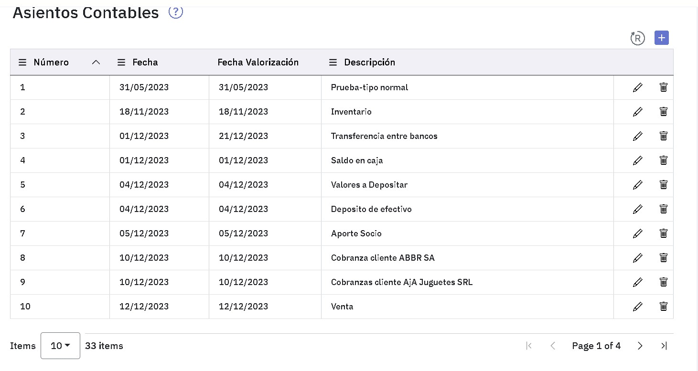
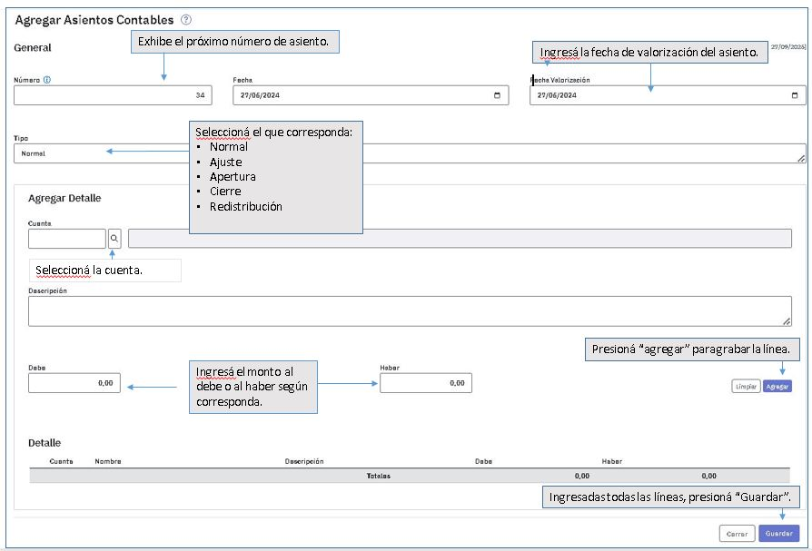
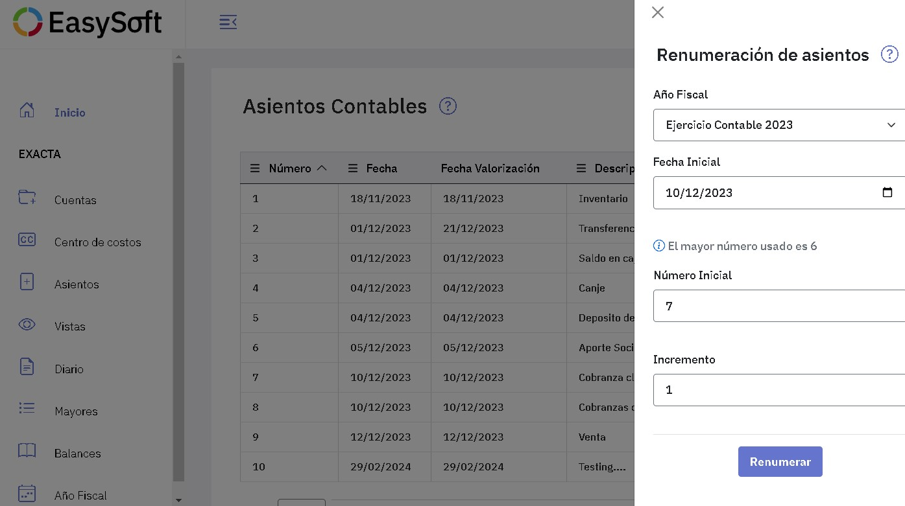

Carga de asientos en el Diario General
Al ingresar a la pantalla podés ver los asientos ya registrados.
Desde esta pantalla podes ingresar nuevos asientos, modificar y eliminar los que ya registraste.

Agregar asientos
Para agregar un nuevo asiento tenes que presionar  y completar la pantalla siguiente:
y completar la pantalla siguiente:

Modificar y Eliminar asientos
En este caso, te ubicas en la línea correspondiente al asiento y, según lo que quieras hacer, presioná  o
o 
.
Renumeración de asientos
Para renumerar asientos tenes que presionar este icono y se abre una ventana a la derecha donde tendrás que completar la información para realizar la renumeración.

Solo es posible renumerar los asientos de un año fiscal abierto que tengan fecha igual o mayor a la indicada en el campo Fecha inicial.
Los asientos se renumerarán a partir del número indicado en el campo Número inicial y con el incremento que se informe.
Temas que pueden interesarte
Vigencia 27/06/24